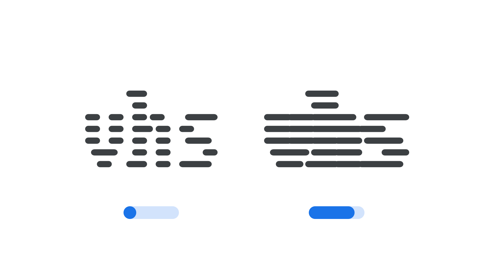

Bleed axis (BLED)
By Google Fonts Knowledge contributors · Google Fonts Knowledge.
Original article · Source on GitHub · CC BY-SA 4.0. Text, illustrations and existing credits reproduced from the licensed Knowledge repository. Open Shelf adapted the layout and links; these adaptations are also CC BY-SA 4.0. No endorsement implied.
“Bleed” (BLED in CSS) is an axis found in some variable fonts that can be used to adjust the text’s overall darkness or typographic color by altering its glyphs’ shapes such as strokes (or other forms). Because it’s only the individual shapes that are changed, there are no changes to the type’s overall width, letter spacing, or kerning. Therefore, manipulating this axis will not result in altered line breaks or page layout changes.
The Google Fonts CSS v2 API defines the axis as:
| Default: | Min: | Max: | Step: |
|---|---|---|---|
| 0 | 0 | 100 | 1 |

In the Workbench typeface, note how moving the Bleed axis towards its maximum value expands the width of each individual scanline without altering the actual glyph width or spacing of the letters.
Negative values make the text appear lighter, while positive values make it darker, similarly to the effects of ink bleed or dot gain on paper.